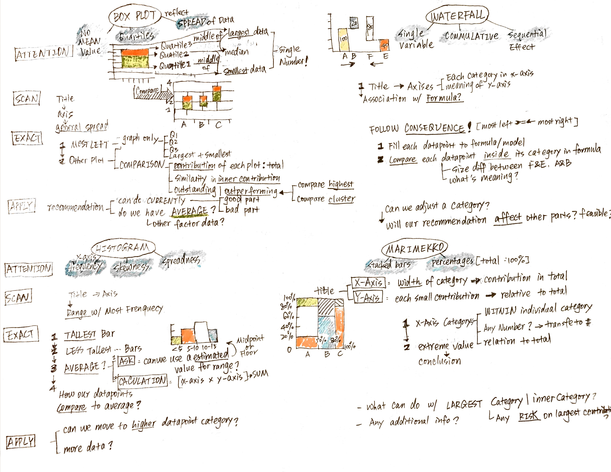

Chapter 2 of Case in Point: Graph Analysis for Consulting and Case Interviews, written by Marc P. Cosentino Mukund Jain
2018-08-29
|
Source
Tags :
Reading Notes
Steps
LINE, BAR, PIE
AREA, SCATTER, BUBBLE, REDAR
BOX, WATERFALL, HISTOGRAM, MARIMEKKO
Steps
SCAN
EXTRACT
APPLY
LINE, BAR, PIE
AREA, SCATTER, BUBBLE, REDAR
BOX, WATERFALL, HISTOGRAM, MARIMEKKO

Previous post
Next post
Please enable JavaScript to view the
comments powered by Disqus.
Comments powered by
Disqus